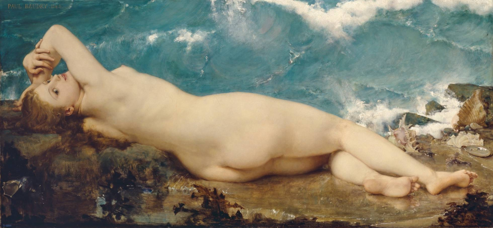
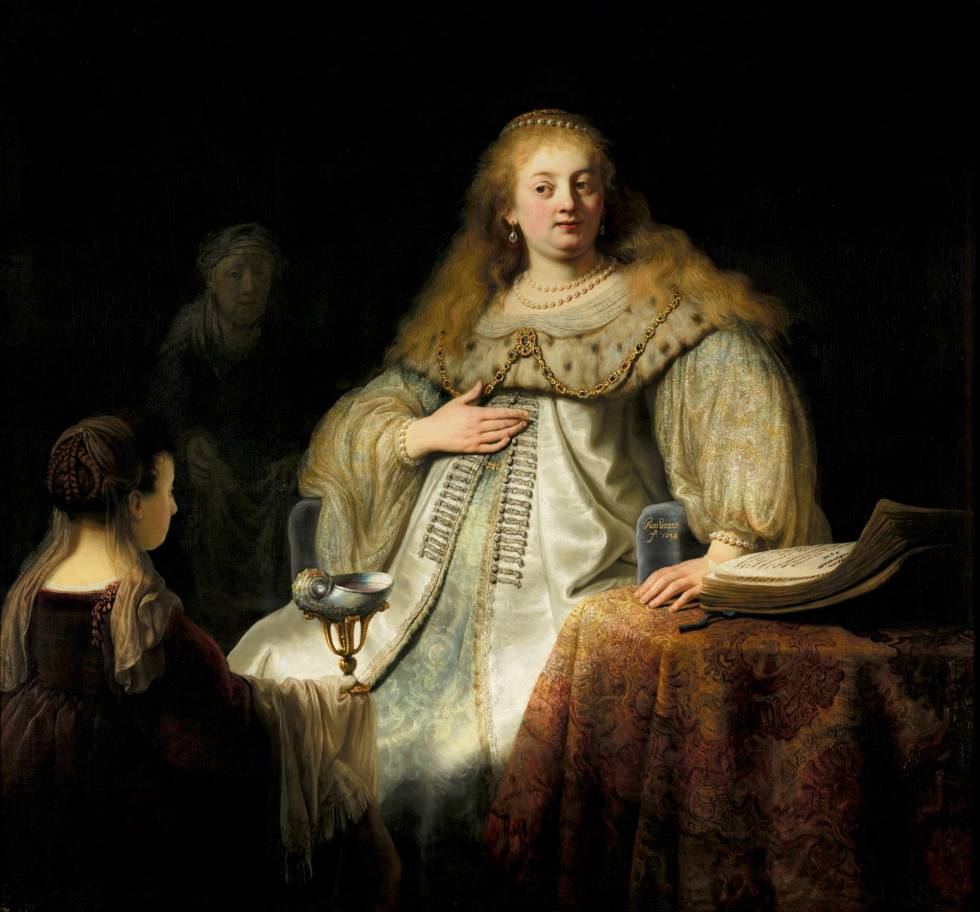
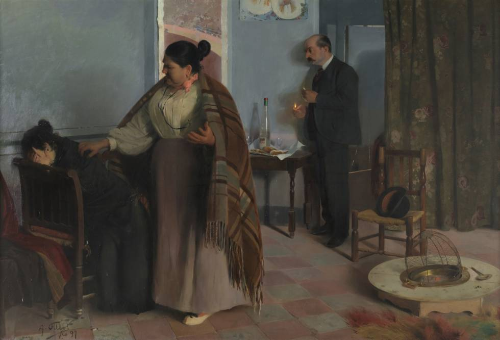
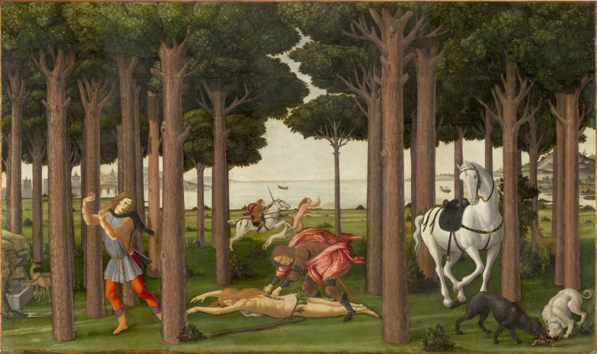

Las invisibles: rebelión desde el confinamiento
Estas semanas entre cuatro paredes están suponiendo un ejercicio permanente de revisión a través de la reflexión, el cine, el arte o los libros.
'La perla y la ola', de Paul Baudry.
“Las mujeres no pueden ser. Ni heroínas, ni humanas, ni visibles. Solo su ausencia, solo su sometimiento, solo su silencio, solo su sumisión, solo su culpa, solo su pecado, solo su miedo, solo su debilidad, solo su amor, solo su abandono, solo su muerte, solo su renuncia, solo su vulnerabilidad, solo su entrega, solo su fe, solo su tristeza, solo su mancha, solo su oscuridad, solo su cuerpo, solo su fracaso, solo su avaricia, solo su inseguridad, solo su descrédito, solo su desahucio, solo su mediocridad, solo su figura. Solo musas”. Peio H. Riaño
En estos días de encierro obligado, en los que, afortunado yo, solo disfruto del cielo que me deja contemplar mi terraza, estoy poniendo a prueba, tal vez más que nunca antes, al machote que todavía llevo dentro. Es decir, al tipo volcado en lo público, en su dimensión productiva, en una permanente acción con la que le demuestra al mundo —y a sí mismo— lo mucho que vale. El que nunca encontró en lo privado un espacio de realización personal, el que habitualmente huyó de estos trabajos de sostén emocional que otras hacían por él, el que sentía que la casa se le caía encima cuando pasaba en ella más de dos días seguidos.
Estas semanas ya entre cuatro paredes, y sin perro al que pasear, están suponiendo un ejercicio permanente de revisión de ese hombre hegemónico que todavía me habita y que se resiste a desaparecer, por más que tenga bien aprendida la teoría. En este proceso que, más allá de los miedos, de las incertezas y de la desesperanza que vivo como el resto, está provocando que cada día me vaya quitando una capa de costra, me están ayudando las ventanas que siempre son los libros, las películas que ponen en acción la empatía que a veces me falta, la música que me hace bailar y bailar, haciendo que confirme que solo los tipos blanditos bailan y que yo no soy sino un mariconazo.
En un perverso ejercicio, que intento, no siempre con éxito, que no me conduzca a la melancolía, revivo las últimas obras de teatro que vi —Prostitución, Naufragios de Alvar Núñez—, las últimas películas que me hicieron pensar en una sala oscura —Invisibles— o las últimas exposiciones que recorrí tratando de encontrar en el arte alguna respuesta a mis con frecuencia jodidos interrogantes.
'Judit en el banquete de Holofernes', de Rembrandt.
En esta especie de viaje en el tiempo he vuelto casi al principio de este curso entre paréntesis y he recordado la exposición dedicada a Lavinia Fontana y Sofonisba Anguissola en el Prado, la segunda, si no recuerdo mal, tras la dedicada a Clara Peeters, que la pinacoteca en toda su historia ha centrado en pintoras. Ellas, siempre la excepción. Y lo hecho de la mano de Peio H. Riaño que en su recién publicado libro Las invisibles trata de contestar a la pregunta de por qué el Museo del Prado ignora a las mujeres.
He de confesar que me he bebido este libro, escrito desde ese eje que une cabeza, corazón y vientre, y que, con él, además de descubrir muchas de esas historias que sigue ignorando el discurso escrito por y para los hombres, y de entender esa parte oculta de obras de arte que yo siempre había mirado con unas lentes patriarcales, he confirmado lo que hace ya años vengo aprendido de la mano de mis compañeras de la Asociación Clásicas y Modernas. Me refiero a la necesidad de poner el dedo de la igualdad en la llaga de la cultura y desmantelar toda una estructura a través de la cual el patriarcado se mantiene y se reinventa. Una estructura de poder, no lo olvidemos, que ha mantenido vivas sus fauces durante siglos gracias al silenciamiento de las mujeres, a su negación de sujetas activas en los procesos creativos y en la creación de discursos.
'La bestia humana', de Fillol.
Como bien explica Gerda Lerner en su imprescindible La creación de la conciencia feminista, “no es solo que las mujeres hayan sido excluidas del proceso de creación de las construcciones conceptuales, a través de la privación de la educación, sino que al mismo tiempo los constructos intelectuales que explicaban el mundo han sido androcéntricos, parciales y han estado distorsionados”. Una realidad que lamentablemente apenas hemos corregido, tal y como compruebo cada año cuando le pregunto a mi alumnado cuáles son sus referencias en ámbitos como el pensamiento, la ciencia o el arte. Es entonces cuando siento un pellizco que me hace rezar mis oraciones laicas a Siri Hudsvet y a todas esas mujeres que miran críticamente a los hombres que miran a las mujeres.
El libro de Riaño, además de invitarnos a realizar un delicioso paseo por una inexistente exposición en la que recorremos salas y rincones que nunca nos enseñaron, y que tanto se agradece en estos días de confinamiento, subraya el papel esencial que tiene la cultura, a través de la creación de imaginarios colectivos, en la consolidación de un modelo de sociedad en el que todavía hoy nosotros seguimos siendo la parte privilegiada, mientras que las mujeres continúan sufriendo una discriminación sistémica.
'Escenas de la historia de Nastagio degli Onesti', de Sandro Botticelli.
Esta asimetría se traduce en el mundo del arte no solo en la negación de la genialidad de ellas, sino también en la usurpación de todo un discurso por parte de los hombres. De esta manera, la cultura, incluida la pintura, legitima prácticas abusivas y otorga legitimidad a instituciones, costumbres y roles que durante siglos han convertido a las mujeres en seres destinados a satisfacer las necesidades y los deseos de los hombres. Es así como el arte se convierte también en un espacio que crea y recrea, y justifica, todas y cada una de las violencias sufridas por las mujeres: desde la que se alimenta en los marcos relacionales y simbólicos, a la que directamente incide sobre sus cuerpos y capacidades. De esta manera, un cuadro también puede ser un artefacto que por ejemplo legitime la cultura de la violación o el sistema prostitucional.
Es urgente, pues, que también los museos, como reclama el autor de Las invisibles, se conviertan en espacios de superación de determinados discursos e imaginarios, que ofrezcan no solo la mirada creativa de las mujeres en igualdad de condiciones con los hombres, sino que también revisen los argumentos y los esquemas mediante los que han construido un espacio, que diría Iris Marion Young, de “imperialismo cultural".
Es decir, en el que la praxis, la mirada y los intereses de un grupo —en este caso, el constituido por la mitad masculina— se han impuesto como la “norma” y, en paralelo, han condenado a los de la otra mitad a las afueras. Sujetos y objetos, genios y musas, productores y reproductoras, amantes y amadas, dioses omnipotentes y esclavas virtuosas. Solo así los museos conquistarán una renovada autoridad, basada no en el peso de la tradición, y con ella de la opresión de género, sino en un diálogo en el que, al fin, también en el mundo del arte, mujeres y hombres podamos ser considerados como seres equivalentes.